Embedded Programming
This page documents the programming of the attiny412 microcontroller.
- Button and LED
- attiny412 datasheet
- attiny412 registers
- Register Manipulation
- Inline assembly
- Just assembly
Button and LED
This is the main loop for processing the fading LED. fading the led is done with analogWrite.
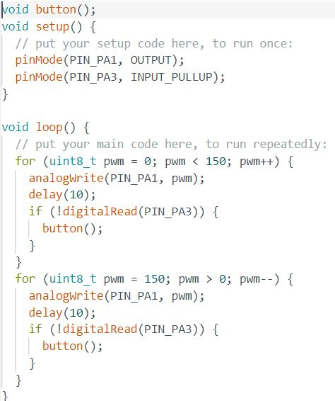This is the code that handles button press behaviors and debouncing.
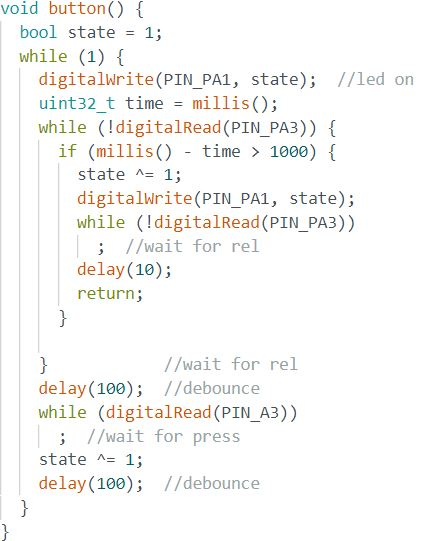This is the code running on the attiny412.
This is the code running on the attiny85.
Download source code attiny85 Download source code attiny412attiny412 datasheet
This is the datasheet for the attiny412 microcontroller.
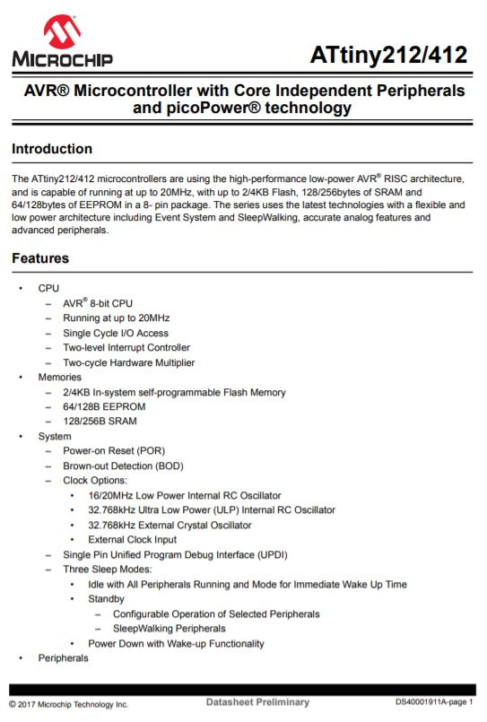These are the specifications.
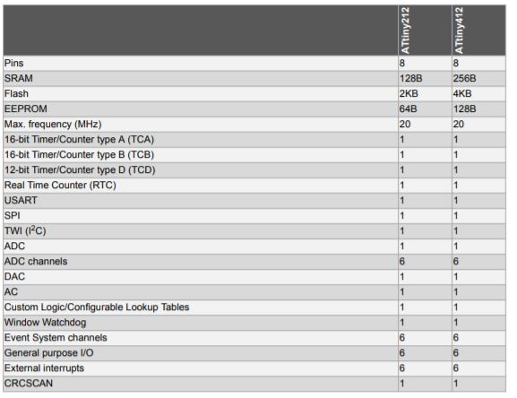This is the block diagram. It shows how peripherials are connected to each other through the bus.
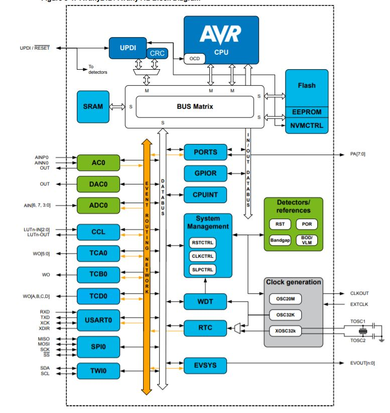This is the pinout.
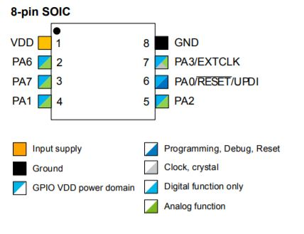Some pins can serve multiple functions.

This is the internal memory address mapping.
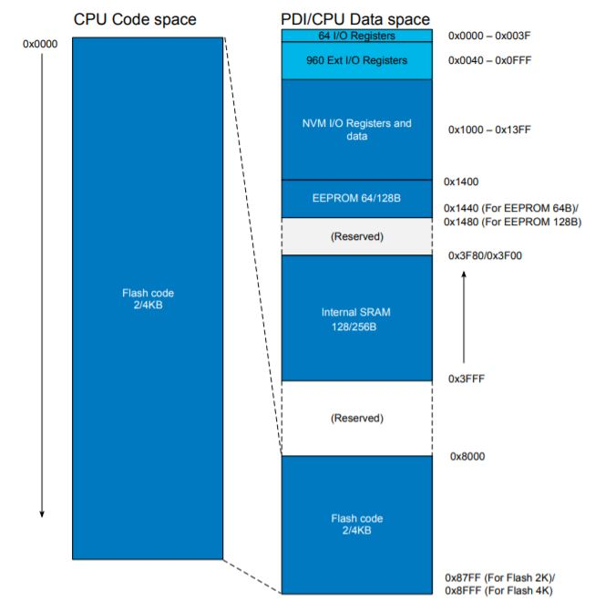This page of the datasheet explains the I/O port.
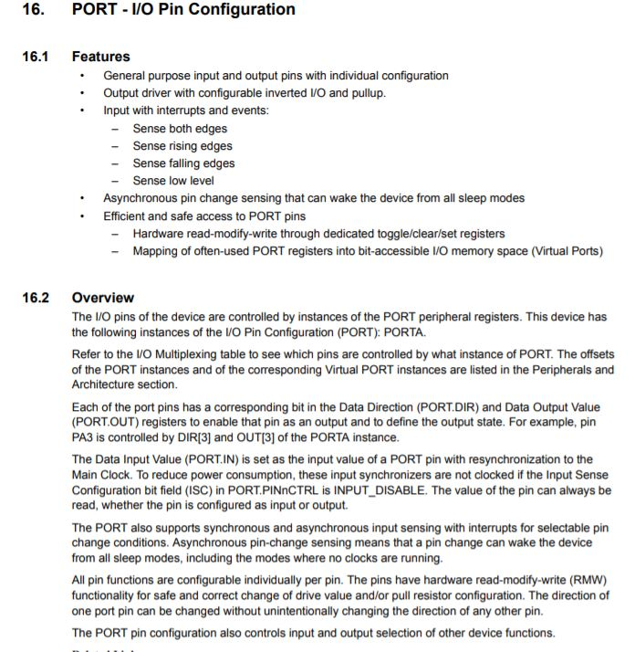This is the internal wiring of the I/O port. It shows how the port connects to the registers.
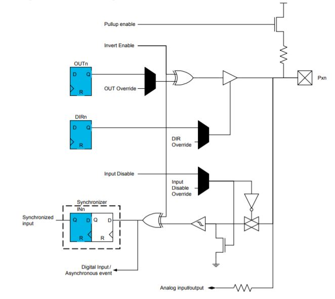attiny412 registers
This is information on the I/O registers.
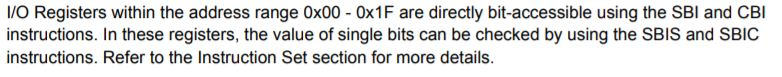This is the address map for the different peripherals.
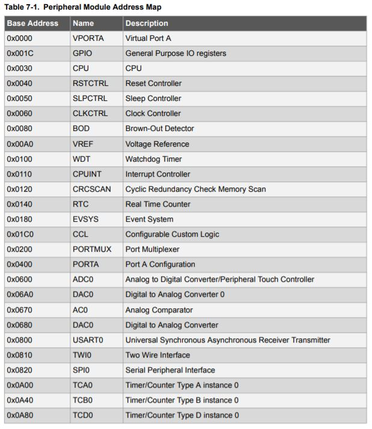This is the instruction set.

The BRNE instruction will branch if the register is not equal to zero. and will take 2 cycles when branching and 1 cycle when not branching.
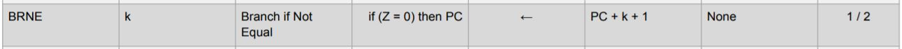This is the DEC instruction. It will decrement the value in a register by 1.
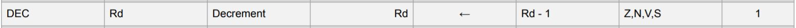The PORT register is mapped to the VPORT register.
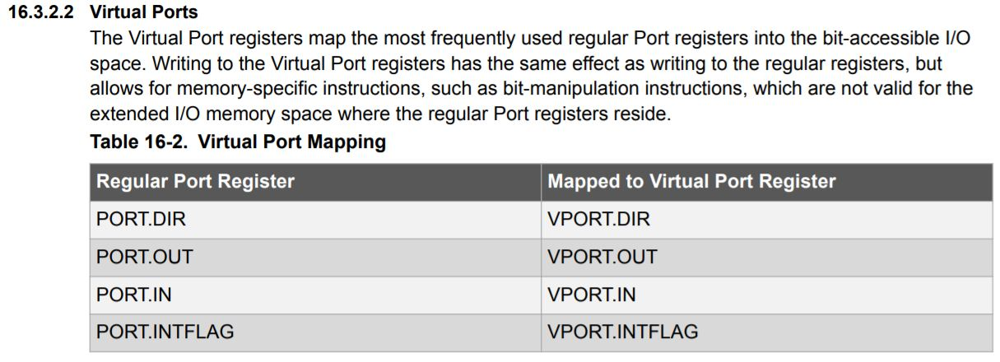This are the different PORT registers.
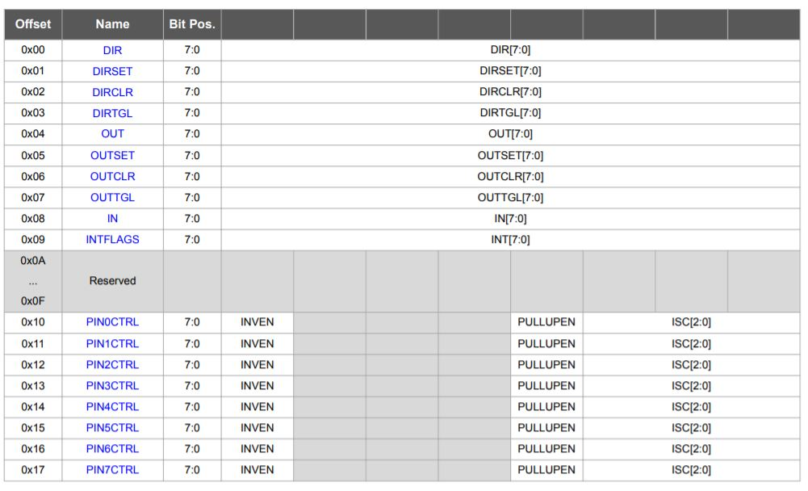And this are the VPORT registers. Only some registers are mapped, the data direction register (DIR), the output register, input register and interrupt flags register.
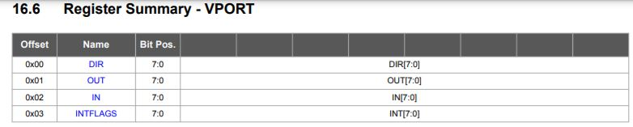This is the bitmapping for the DIR register of VPORT.
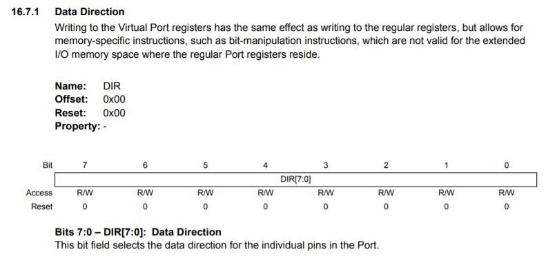This is the bitmapping for the OUT register of VPORT.
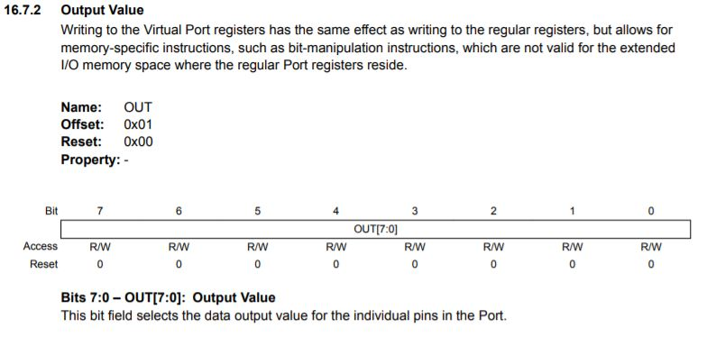This is the bitmapping for the IN register of VPORT.
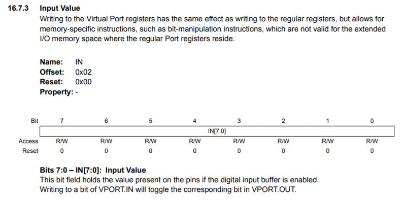By writing a bit high in the IN register, the bit in the OUT register will be toggled.
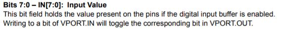Register Manipulation
Port manipulation can write to pins in just a few instructions taking less than a microsecond while digitalWrite takes a few microseconds.
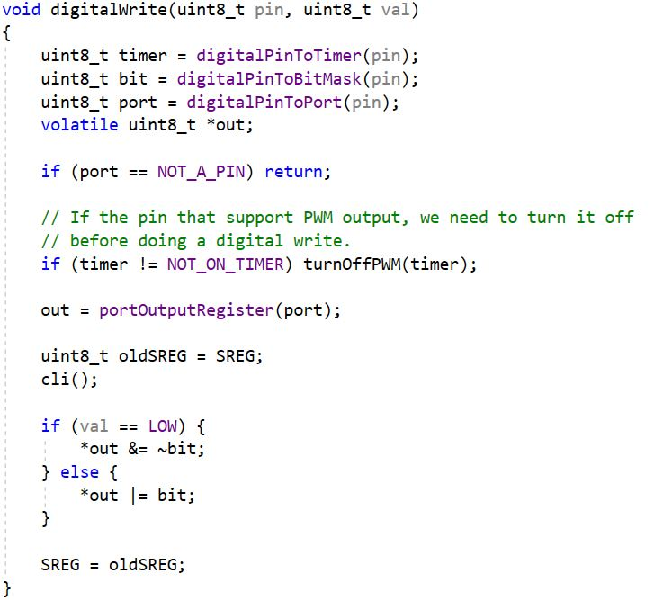The code for digitalWrite is more complicated than code for direct port manipulation.
PORTA.DIR is used to change the DIR register. The bit is set high for output.
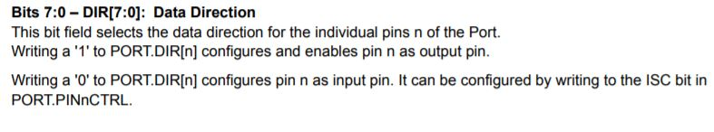PORTA.OUT is used to change the OUT register.
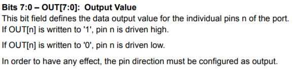This is the code to blink an LED.
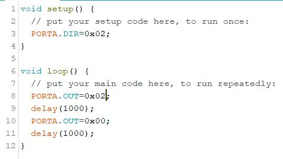This is the program running on the hello board.
Download source codeInline assembly
This is the code to blink an LED.
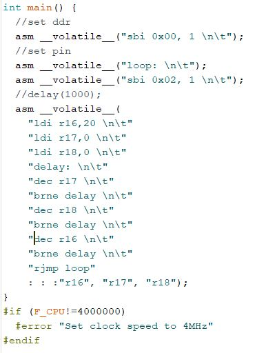"int main()" is used instead of "void setup()" and "void loop()".
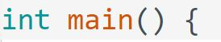"asm" tells the compiler that this is inline assembly. "__volatile__" tells the compiler to not optimize the delay loop.
"sbi" is set bit, it sets a single bit in a register. In this case setting the VPORT.DIR register.
"loop:" is the start of the program loop. When the program has finished the program will restart here.
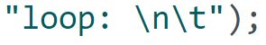"ldi" is load immediate. A value is loaded inot a register.
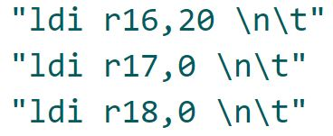"delay:" marks the start of the delay loop.
"dec" is the decrement instruction. it decrements a register by 1.

"brne" is the branch if not equal instruction. It will jump back to "delay:" if the value in the register is not 0.
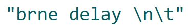"rjmp" is relative jump. It jumps back to the start of the program, "loop:".
This is the clobber list. It tells the compiler the registers that are used.
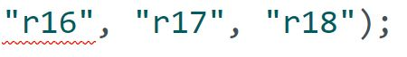This is the compiler directive ensure that the clock speed is 4MHz. This is important because of the hardcoded delay loop.
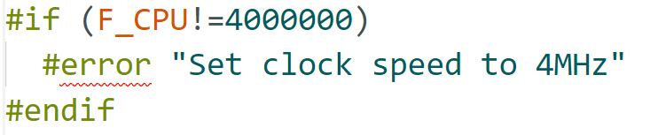The delay loop works by first decrementing register 17. 0-1=255 because the register overflows. Since 255 is not 0 it will branch to "delay:". this repeats until register 17 is 0.
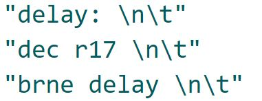This is repeated for register 18. Register 18 reaches 0 when register 17 had been decremented for total of 256*256 times.
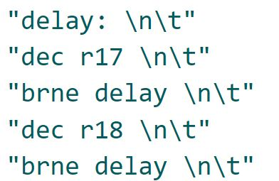This is repeated for register 16. Register 16 starts from 20, so it is only decremented 20 times. When register 16 is 0, the total number of times register 17 has been decremented will be 256*256*20 times.
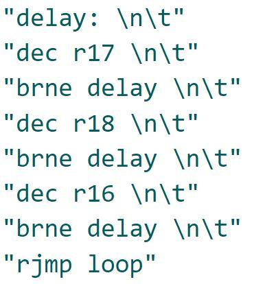"dec" takes 1 cycle and "brne" takes 2 cycles for a total of three cycles. So, the total number of cycles is 256*256*20*3=3,932,160 cycles. Close enough to the 4,000,000 cylces per second to create a delay loop of almost 1 second.
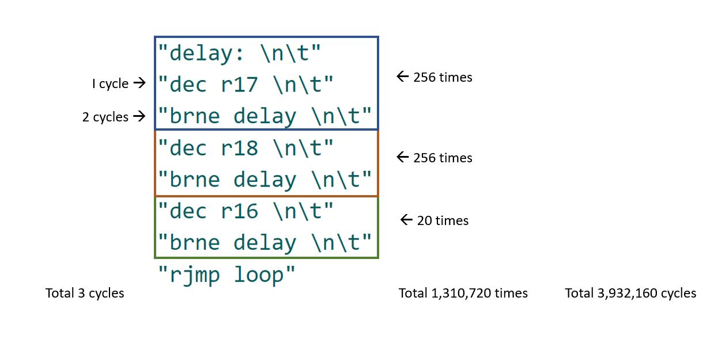This is the program running on the hello board.
Download source codeJust assembly
This is the code to blink an LED.

".global main" is similar to "int main()" it contains the program.
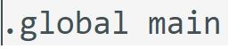This is the loop. Two LEDs are toggled.
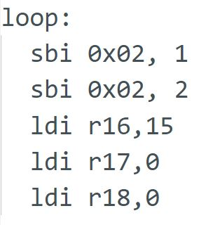This is the delay loop.
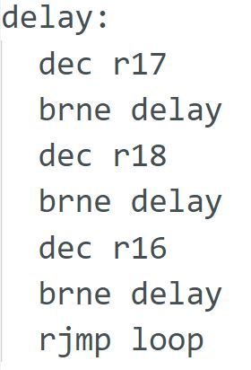This is the program running on the hello board.
Download source code